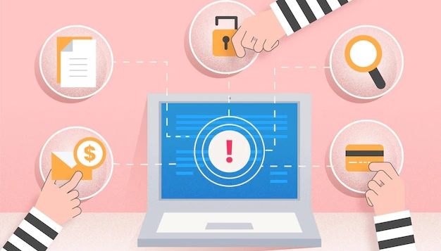

Reasons To Choose A VAR
When it comes to managing IT services, many businesses have found success by working with a value-added reseller (VAR). A VAR is a third-party vendor that provides businesses with access to specialized IT services and products. VAR can provide businesses with a range of IT solutions and services, including hardware and software, technical support, and other services that can help businesses increase productivity and efficiency.
By partnering with a VAR, businesses can receive a customized IT solution that meets their specific needs. This blog post will discuss some of the key reasons why businesses should consider partnering with a VAR when seeking IT services. From cost savings to increased technical support options, a VAR can provide a variety of benefits that can help businesses make the most of their IT investments.
What is Value-added reseller:
An individual or company that adds to the worth and usability of the product before selling to boost its functionality and draw the buyer is a value-added reseller. This is the typical scenario in the information technology and consumer electronics industry, where resellers sell the dismantled products alongside new services.
Unlocking Value Through Reselling:
The reseller adds value, usefulness, and regulatory compliance (e.g., maintenance contracts) to a product it buys from the source, then resells that product to consumers.
They typically buy the product from a centralized source like a distributor to get it comparatively inexpensive. By creating a new product to provide added value, he tries to attract the end user.
After constantly changing and combining different products from various distributors, you can create a new, personalized product for each customer. For example, buying hardware from one distributor and software from another company creates a unique tool for the customer.
Value-Added Reseller (VAR) adds value to the product to be able to resell it and enhance the usefulness of the consumer for the product's requirements. They customize solutions to suit the customer's requirements.
They are capable of selling these products, and plenty of that depends upon the accompanying software. The customer doesn't have to do the technical duties provided by these experts as they pertain to the specific business with which they are associated.
Streamlining Business Processes With VARs:
A value-added reseller has earned a reputation as an expert in their specialized technical area of expertise. These resellers, many of which are information technology firms, are experts at installing, maintaining, testing, and upgrading hardware and software.
Some VARs have been assigned to work with one company, but others represent several manufacturers and sell a number of brands. Even though their main goal is to gain additional sales, these companies may offer a significant promotional discount on their products to these resellers.
Managed Services for VARs:
Managed service is roughly analogous to Value-Adding Resellers (VAR), which work with value enhancements to circumvent a contractual agreement. A managed service provider typically tries to pass on the product to ensure product reliability.
In order to compete with the increasing competition and cut down the slim profit margins, VAR moved its business to provide managed service provision as an alternative for end users as a premium service.

A managed service provider regularly audits managed services to ensure that the software functions optimally from time to time by following a service level agreement or annual maintenance contract.
Benefits of VARs:
The complications that are inherent in producing and selling cutting-edge IT products make VARs appealing to IT companies where they don't have to shoulder all the burdens that would otherwise require substantial costs and work.
An expert VAR becomes a key source of information for any prospective customer, as it is key to strike any deal and secure the client's confidence since they have a track record of sales and have attended prior training courses offering valuable information on products.
They are seen as experts in any technical needs in business-related products with qualified knowledge and experience.
In conclusion, there are many reasons to consider a VAR for your business. Not only do they provide expertise and cost-effective solutions, but they also have the ability to customize their services to fit your unique business needs. Additionally, VARs are able to manage the entire workflow of IT projects, from start to finish, and provide exceptional customer service. By choosing a VAR, you will have access to the resources, knowledge, and experience that you need to get the job done efficiently and cost-effectively.